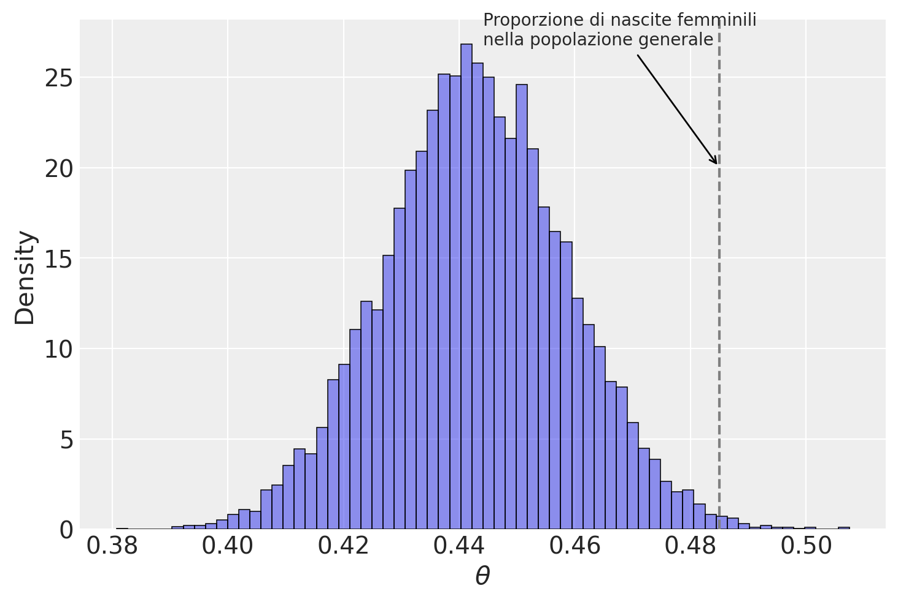
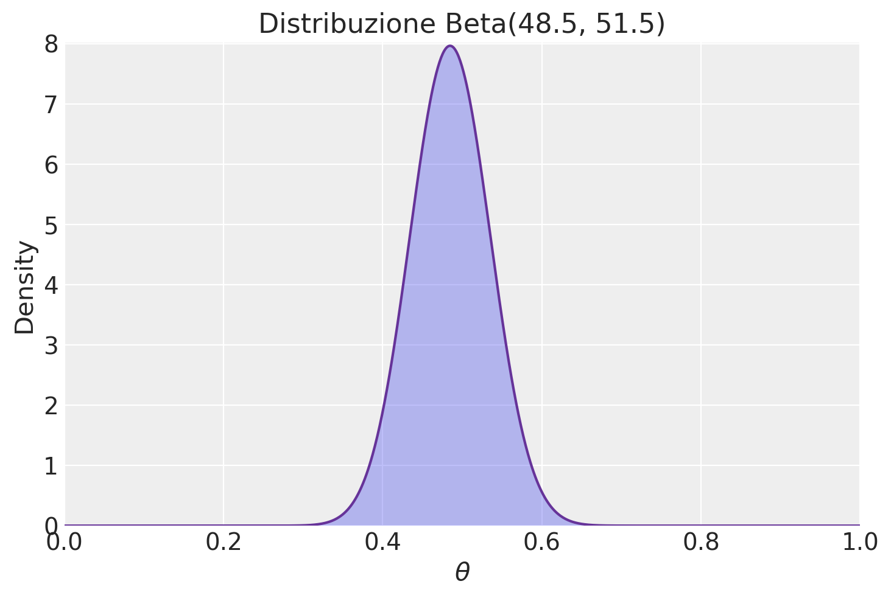
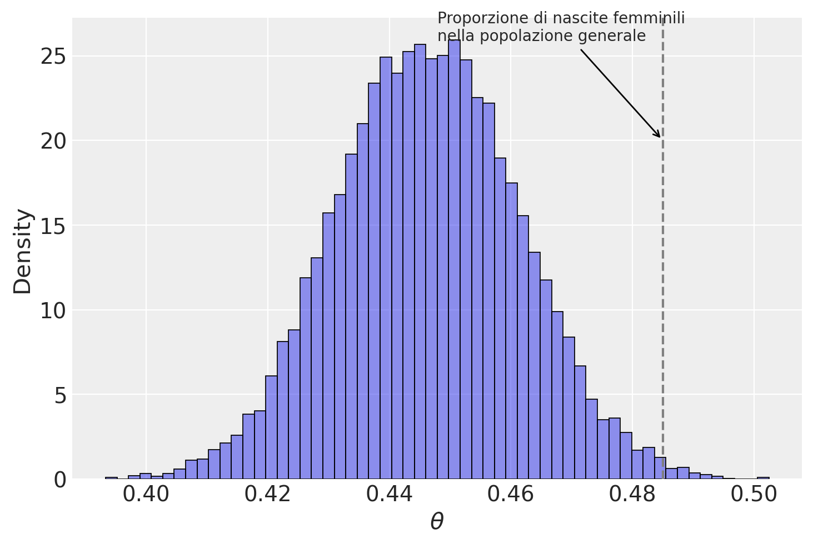
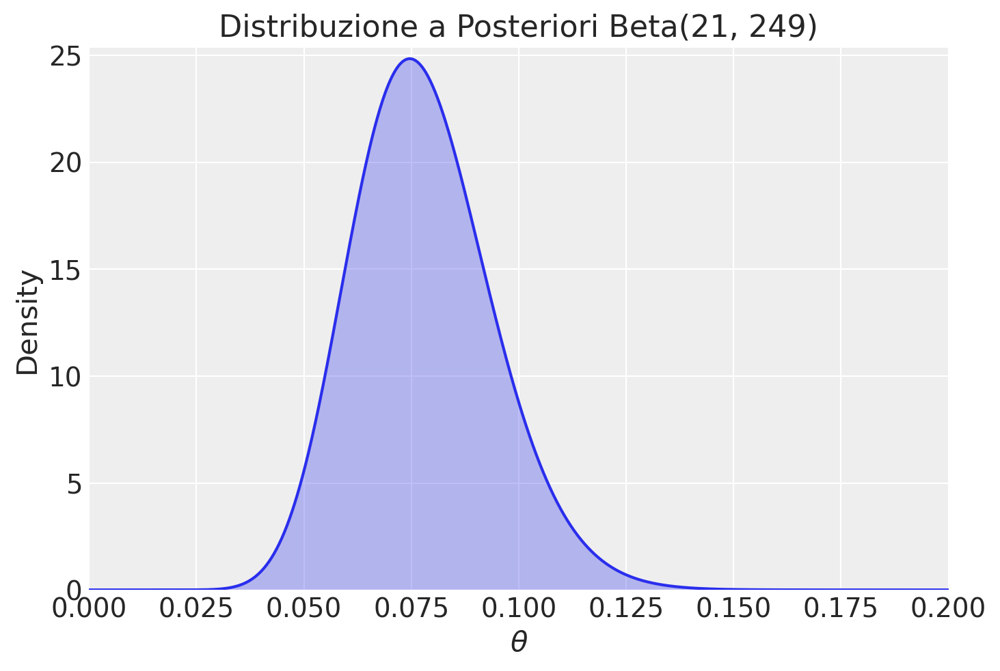

# Standard library imports
import os
# Third-party imports
import numpy as np
import pandas as pd
import matplotlib.pyplot as plt
import seaborn as sns
import arviz as az
import scipy.stats as stats
from scipy.special import expit # Funzione logistica
from cmdstanpy import cmdstan_path, CmdStanModel
# Configuration
seed = sum(map(ord, "stan_poisson_regression"))
rng = np.random.default_rng(seed=seed)
az.style.use("arviz-darkgrid")
%config InlineBackend.figure_format = "retina"
# Define directories
home_directory = os.path.expanduser("~")
project_directory = f"{home_directory}/_repositories/psicometria"Appendice X — Inferenza bayesiana
Capitolo 34
import numpy as np
from scipy.stats import binom
# Definire i parametri del problema
n = 100 # numero di studi
k = 20 # numero di studi che hanno condiviso i materiali
# Discretizzazione della probabilità theta
theta_grid = np.array([0.05, 0.15, 0.25, 0.35, 0.45, 0.55, 0.65, 0.75, 0.85, 0.95])
# Distribuzione a priori
prior_probs = np.array([0.05, 0.20, 0.30, 0.15, 0.10, 0.08, 0.05, 0.03, 0.02, 0.02])
# Calcolo della verosimiglianza per ciascuna theta
likelihood = binom.pmf(k, n, theta_grid)
# Distribuzione a posteriori (non normalizzata)
posterior_unnorm = likelihood * prior_probs
# Normalizzazione della distribuzione a posteriori
posterior_probs = posterior_unnorm / np.sum(posterior_unnorm)
# Calcolo della media a posteriori
posterior_mean = np.sum(posterior_probs * theta_grid)
# Estrazione di un campione casuale dalla distribuzione a posteriori
np.random.seed(42) # per la riproducibilità
posterior_sample = np.random.choice(theta_grid, size=10000, p=posterior_probs)
# Calcolo dell'intervallo di credibilità al 89%
cred_interval = np.percentile(posterior_sample, [5.5, 94.5])
posterior_mean, cred_intervalLa soluzione dell’esercizio basato sul metodo della griglia fornisce i seguenti risultati:
- Media della distribuzione a posteriori: 0.2152
- Intervallo di credibilità al 89%: [0.15, 0.25]
Questi risultati indicano che, dopo aver osservato i dati e aver considerato la distribuzione a priori, la probabilità stimata che uno studio condivida i materiali di ricerca è circa il 21.5%, con un intervallo di credibilità all’89% che va dal 15% al 25%.
Capitolo 36
import scipy.stats as stats
import numpy as np
# Dati forniti
alpha_prior = 31.91
beta_prior = 100 - 31.91 # 100 - successo = insuccesso
# Parametri per la distribuzione a priori
a_prior = alpha_prior
b_prior = beta_prior
# Parametri per il calcolo della distribuzione a posteriori
n_observations = 152
# Scenario (a): tasso di successo del 60%
successes_a = 0.60 * n_observations
# Scenario (b): tasso di successo del 96%
successes_b = 0.96 * n_observations
# Calcolo della distribuzione a posteriori
a_posterior_a = a_prior + successes_a
b_posterior_a = b_prior + (n_observations - successes_a)
a_posterior_b = a_prior + successes_b
b_posterior_b = b_prior + (n_observations - successes_b)
# Distribuzioni beta a posteriori
x = np.linspace(0, 1, 1000)
posterior_a = stats.beta.pdf(x, a_posterior_a, b_posterior_a)
posterior_b = stats.beta.pdf(x, a_posterior_b, b_posterior_b)
a_posterior_a, b_posterior_a, a_posterior_b, b_posterior_bLa risoluzione del problema ha portato al calcolo delle distribuzioni a posteriori nei due scenari specificati, utilizzando il metodo delle famiglie coniugate.
Scenario (a): Tasso di successo del 60%
- Parametri della distribuzione a posteriori:
- \(\alpha_{\text{post}} = 123.11\)
- \(\beta_{\text{post}} = 128.89\)
Scenario (b): Tasso di successo del 96%
- Parametri della distribuzione a posteriori:
- \(\alpha_{\text{post}} = 177.83\)
- \(\beta_{\text{post}} = 74.17\)
In entrambi gli scenari, i parametri \(\alpha_{\text{post}}\) e \(\beta_{\text{post}}\) determinano le forme delle distribuzioni a posteriori, che ci forniscono informazioni aggiornate su \(\theta\) (il tasso di successo) dopo aver osservato i dati.
Commento sui Risultati
Scenario (a): Con un tasso di successo osservato del 60%, la distribuzione a posteriori riflette una moderata concentrazione attorno a \(\theta = 0.49\), suggerendo una certa incertezza nella stima del vero tasso di successo, ma comunque compatibile con la distribuzione a priori basata sugli studi preregistrati.
Scenario (b): Con un tasso di successo osservato del 96%, la distribuzione a posteriori è fortemente concentrata verso l’alto, con un valore medio di \(\theta\) che si avvicina a 0.71. Questo scenario riflette una maggiore confidenza in un tasso di successo elevato, pur risultando in una distribuzione molto diversa rispetto alla distribuzione a priori.
Questi risultati mostrano come i dati osservati influenzino la nostra stima del tasso di successo, con la distribuzione a priori che viene “aggiornata” in base alle osservazioni fatte. In particolare, lo scenario con il 96% di successo evidenzia una netta discrepanza rispetto alla distribuzione a priori, suggerendo che i risultati ottenuti potrebbero essere molto più ottimistici rispetto alla base di riferimento data dagli studi preregistrati.
Sia \(\theta\) la probabilità di nascita di una femmina dato il caso di placenta previa. Se utilizziamo una distribuzione a priori uniforme per \(\theta\) (Beta(1, 1)), allora il problema si riduce a trovare la distribuzione a posteriori per \(\theta\) nel contesto di un modello beta-binomiale. La distribuzione a posteriori risulta essere una Beta(y + \(\alpha_{\text{prior}}\), N - y + \(\beta_{\text{prior}}\)), ovvero una Beta(438, 544). Possiamo calcolare la media a posteriori di \(\theta\) nel modo seguente:
births = 987
fem_births = 437
stats.beta.mean(fem_births + 1, births - fem_births + 1).round(3)0.443Possiamo anche simulare un campione dalla distribuzione a posteriori per fare inferenze.
posterior_sample = stats.beta.rvs(size=10000, a=fem_births + 1, b=births - fem_births + 1)
sns.histplot(posterior_sample, alpha=0.5, stat="density")
_ = plt.xlabel(r"$\theta$")
plt.axvline(0.485, color="gray", linestyle="--")
plt.annotate(
"Proporzione di nascite femminili\nnella popolazione generale",
xy=(0.485, 20), # Posizione dell'annotazione (x, y)
xytext=(0.5, 0.95), # Posizione del testo dell'annotazione
textcoords="axes fraction",
arrowprops=dict(facecolor="black", arrowstyle="->"),
horizontalalignment="left",
)Text(0.5, 0.95, 'Proporzione di nascite femminili\nnella popolazione generale')
np.quantile(posterior_sample, [0.025, 0.975]).round(3)array([0.411, 0.473])Riassunti precisi della distribuzione a posteriori possono essere ottenuti dalle proprietà della distribuzione beta. I quantili esatti della distribuzione a posteriori possono essere calcolati tramite integrazione numerica della densità beta; la mediana risulta essere 0.446 e l’intervallo centrale di credibilità al 95% è [0.415, 0.477].
In conclusione, possiamo affermare con un livello di certezza soggettiva del 95% che la proporzione di nascite femminili nella popolazione con placenta previa è inferiore alla proporzione di nascite femminili nella popolazione generale.
# Parametri della distribuzione Beta
alpha_prior = 48.5
beta_prior = 51.5
# Creazione dei valori x su cui valutare la distribuzione Beta
x = np.linspace(0, 1, 1000)
# Valutazione della densità di probabilità Beta su x
y = stats.beta.pdf(x, alpha_prior, beta_prior)
# Creazione del grafico
plt.plot(x, y, color="rebeccapurple")
plt.fill_between(x, y, alpha=0.3)
plt.xlim(0, 1)
plt.ylim(0, max(y) + 0.05)
plt.xlabel(r"$\theta$")
plt.ylabel("Density")
plt.title("Distribuzione Beta(48.5, 51.5)")
plt.legend()
plt.show()/var/folders/s7/z86r4t9j6yx376cm120nln6w0000gn/T/ipykernel_10074/1642415141.py:19: UserWarning: No artists with labels found to put in legend. Note that artists whose label start with an underscore are ignored when legend() is called with no argument.
plt.legend()
births = 987
fem_births = 437
posterior_sample = stats.beta.rvs(
size=10000, a=fem_births + alpha_prior, b=births - fem_births + beta_prior
)
sns.histplot(posterior_sample, alpha=0.5, stat="density")
_ = plt.xlabel(r"$\theta$")
plt.axvline(0.485, color="gray", linestyle="--")
plt.annotate(
"Proporzione di nascite femminili\nnella popolazione generale",
xy=(0.485, 20), # Posizione dell'annotazione (x, y)
xytext=(0.5, 0.95), # Posizione del testo dell'annotazione
textcoords="axes fraction",
arrowprops=dict(facecolor="black", arrowstyle="->"),
horizontalalignment="left",
)Text(0.5, 0.95, 'Proporzione di nascite femminili\nnella popolazione generale')
np.quantile(posterior_sample, [0.025, 0.975]).round(3)array([0.417, 0.476])I risultati replicano sostanzialmente quelli ottenuti nell’Esercizio 36.2.
Per risolvere il problema utilizzando il modello beta-binomiale e calcolare la distribuzione a posteriori, seguiamo i seguenti passaggi.
- Abbiamo un campione di 202 soggetti adulti italiani, e 6.4% di questi sono mancini. Ciò significa che il numero di mancini osservati è \(y = 0.064 \times 202 = 12.928\), che approssimiamo a \(y = 13\).
- La prior informativa basata sullo studio di Papadatou-Pastou et al. (2020) è espressa come una distribuzione Beta(8, 60).
Nel modello beta-binomiale, se abbiamo una prior \(\text{Beta}(\alpha_{\text{prior}}, \beta_{\text{prior}})\), e osserviamo \(y\) successi su \(N\) tentativi, la distribuzione a posteriori sarà:
\[ \text{Beta}(\alpha_{\text{post}} = \alpha_{\text{prior}} + y, \, \beta_{\text{post}} = \beta_{\text{prior}} + N - y) \]
In questo caso:
- \(\alpha_{\text{prior}} = 8\)
- \(\beta_{\text{prior}} = 60\)
- \(y = 13\)
- \(N = 202\)
Quindi i parametri della distribuzione a posteriori saranno:
\[ \alpha_{\text{post}} = 8 + 13 = 21 \]
\[ \beta_{\text{post}} = 60 + 202 - 13 = 249 \]
La distribuzione a posteriori è dunque una Beta(21, 249).
Questa distribuzione a posteriori riflette la nostra credenza aggiornata sulla proporzione di mancini nella popolazione italiana, tenendo conto sia delle evidenze dello studio di Gori et al. (2024) che delle informazioni pregresse della meta-analisi di Papadatou-Pastou et al. (2020).
Per visualizzare questa distribuzione a posteriori, possiamo utilizzare Python:
# Parametri della distribuzione Beta a posteriori
alpha_post = 21
beta_post = 249
# Creazione dei valori x su cui valutare la distribuzione Beta
x = np.linspace(
0, 0.2, 1000
) # Si concentra la visualizzazione nell'intervallo plausibile
# Valutazione della densità di probabilità Beta su x
y = stats.beta.pdf(x, alpha_post, beta_post)
# Creazione del grafico
plt.plot(x, y)
plt.fill_between(x, y, alpha=0.3)
plt.xlim(0, 0.2)
plt.ylim(0, max(y) + 0.5)
plt.xlabel(r"$\theta$")
plt.ylabel("Density")
plt.title("Distribuzione a Posteriori Beta(21, 249)")
plt.legend()
plt.show()/var/folders/s7/z86r4t9j6yx376cm120nln6w0000gn/T/ipykernel_10074/519876995.py:21: UserWarning: No artists with labels found to put in legend. Note that artists whose label start with an underscore are ignored when legend() is called with no argument.
plt.legend()
Possiamo anche calcolare la media e la varianza della distribuzione a posteriori:
- Media a posteriori:
\[ \mu_{\text{post}} = \frac{\alpha_{\text{post}}}{\alpha_{\text{post}} + \beta_{\text{post}}} = \frac{21}{21 + 249} = 0.077 \]
- Varianza a posteriori:
\[ \text{Var}_{\text{post}} = \frac{\alpha_{\text{post}} \beta_{\text{post}}}{(\alpha_{\text{post}} + \beta_{\text{post}})^2 (\alpha_{\text{post}} + \beta_{\text{post}} + 1)} \approx 0.00026 \]
La distribuzione a posteriori Beta(21, 249) suggerisce che la proporzione di mancini nella popolazione italiana è molto probabilmente vicina al 7.7%, con un intervallo di incertezza che riflette sia i dati attuali che le informazioni pregresse.